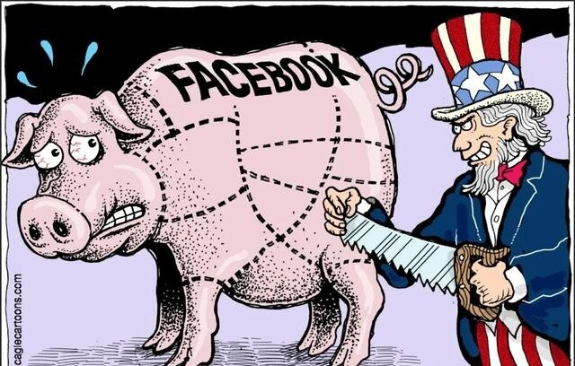

越来越戏剧性了，这个美国大佬，不仅怂了，还攀上特朗普了。
谁呀？
美国互联网巨头扎克伯格。
要知道，特朗普最痛恨的人是谁？
可能第一是拜登（现在改成哈里斯），第二就是扎克伯格了。
反正，就在上个月，特朗普公开痛骂，一旦自己当选，就要把扎克伯格关进监狱。
为什么？
第一，扎克伯格旗下的脸谱（Facebook）和照片墙（Ins），居然封了特朗普的账号。
第二，4年前大选，扎克伯格还给民主党捐了4亿美元巨款，帮助拜登打败了特朗普。
此仇不报，非特朗普。
扎克伯格怎么反应？
秒怂！
而且，怂得眼疾手快，怂得干净利落。
脸谱和照片墙，上个月立刻对特朗普完全解封，理由是“美国人民应该能够在同样的基础上听取总统候选人的意见”。
一句话，拜登（哈里斯）啥待遇，特朗普就啥待遇。
早不解封，晚不解封，特朗普一抱怨，就解封了。
但这还只是扎克伯格的第一板斧，第二板斧更让人大跌眼镜，扎克伯格开始不住口地夸赞，夸赞特朗普是英雄。
在接受彭博社专访时，谈到特朗普遇刺，扎克伯格说：看到特朗普在脸部中枪后站起来，挥舞着拳头，身后飘扬着美国国旗，这是我一生中见过的最牛掰的事情之一。
请注意：最牛掰，而且是他一生之中。
要知道，以前扎克伯格最讨厌的美国政客，就是特朗普。他可是明确表态，“对特朗普总统的分裂和煽动性言论深感震惊和厌恶”。
可能也觉得这个弯转得有点大，说到“最牛掰事情”时，扎克伯格也忍不住自己先笑了，然后又说：作为一个美国人，从某种程度上说，很难不为这种精神和斗志动容，我想这也是很多人喜欢和支持特朗普的原因。
但最戏剧性的，可能还是第三板斧。
按照特朗普在最新采访中透露，过去几周，扎克伯格不停地给特朗普打电话，嘘寒问暖，电话诉衷肠。
比如，特朗普遇刺后，扎克伯格立刻给特朗普电话，赞扬他“非常勇敢”。用特朗普的话说，扎克伯格“尊重我那天所做的事情”。
扎克伯格还向特朗普保证，自己不会在大选中支持民主党人，“就是因为这份尊重”。
但这还没有完。
过了几天，扎克伯格又给特朗普打电话，向特朗普郑重道歉。
道什么歉呢？
原来，特朗普遇刺后，他挥舞拳头的照片被广为流传，但在脸书和照片墙上，还出现了另一张P过的照片，特朗普挥舞拳头边上，几个特勤局特工在微笑……
这显然是在嘲讽特朗普。
所以，脸书和照片墙给这张照片打上了“事实需核查”的标签；但鬼使神差地，原来没P过的那张照片，也被打上了这个标签。
所以，扎克伯格特意打来电话，向特朗普表达歉意。
扎克伯格“实际上道了歉……说他们犯了一个错误”。顿了一顿，特朗普又补充说，“我相信马克·扎克伯格。他给我打了很多电话。”
半个月前，还威胁要将扎克伯格关进监狱；半个月后，扎克伯格已经深得特朗普信任了。
这个世界，变化快吧。
不得不说，这真是一场大戏。
特朗普是当仁不让大主角，扎克伯格翻脸更是比翻书还快。
需要变的时候，果断180度华丽大转弯。毕竟，与4年前相比，扎克伯格很清楚，现在形势大不一样，至少到目前，特朗普赢的概率还挺高。而且，特朗普还有一个特点，喜欢秋后算账。
怎么办？
那就先下手为强，发动温柔攻势。
所以，我们就看到，扎克伯格最近各种动作拼命表现爱国，独立日还挥舞星条旗滑行；他更对特朗普使出灵魂三板斧，不仅解除封禁，大吹法螺，而且还有事没事煲上了电话粥。
人在屋檐下，不得不低头。不管你是多么重要的社交平台，也不管你是怎样叱咤风云的互联网大佬。

特朗普喜欢不喜欢扎克伯格不重要，重要的是扎克伯格先爱上了特朗普。
也不得不说，这个世界，卤水点豆腐，一物降一物，你软他就硬，你硬他就软。
毕竟是练柔术的，扎克伯格身段就是柔软，在他一波波的温柔攻势下，原先横眉怒目的特朗普，最近果然龙颜大悦，不仅不再提送扎克伯格进监狱，还公开夸赞扎克伯格做得好。
小扎啊小扎，不得不说，你可真有一套啊！